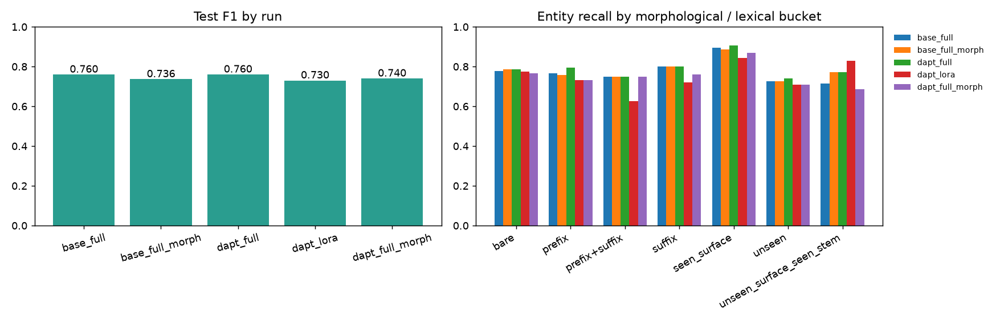
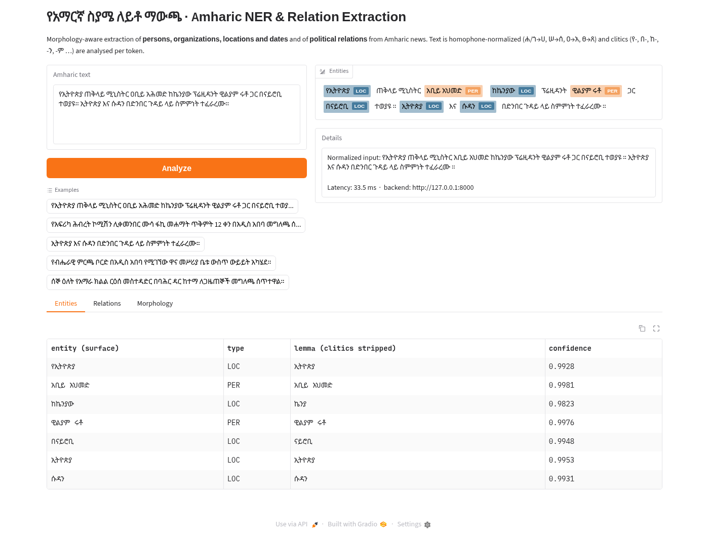
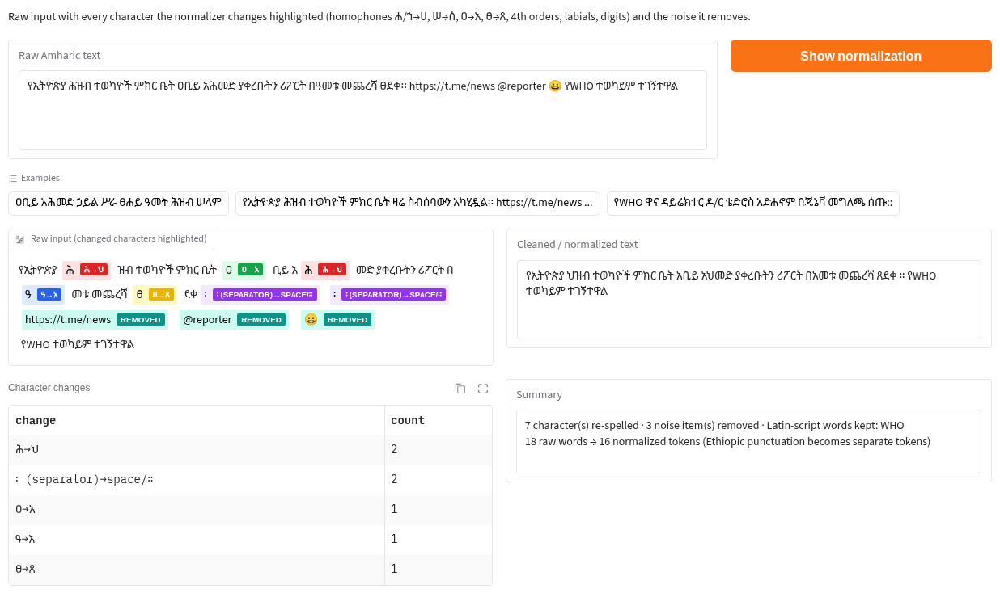
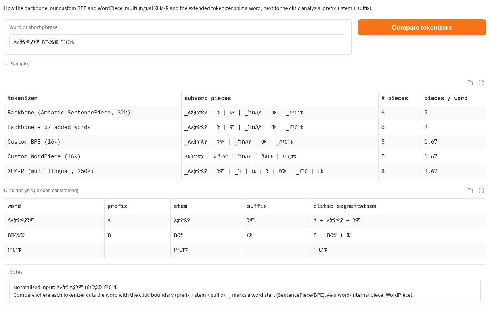
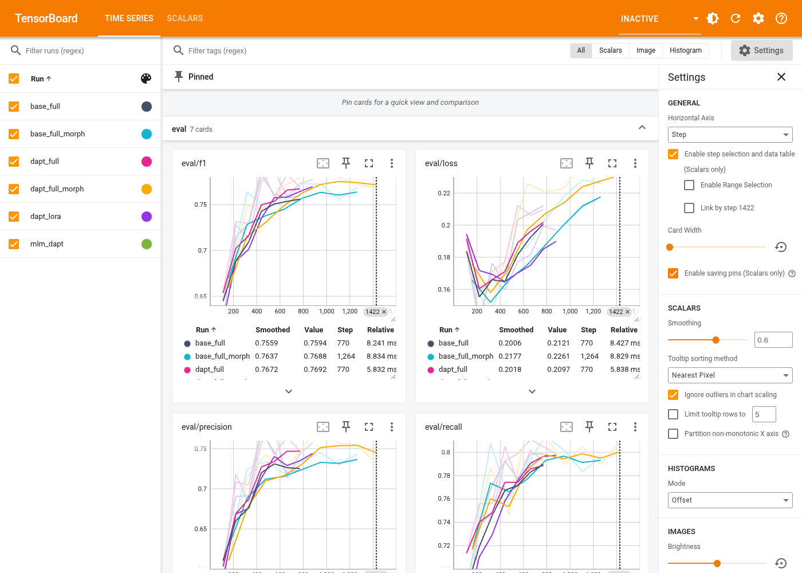

| Language | Amharic (አማርኛ), Ge'ez / Fidel script |
| Required stack | MasakhaNER · Amharic RoBERTa (AmBERTa-class) · spaCy custom pipeline · BIO tagging |
| Stages | Collection · Normalization · Tokenization · Adaptation · Evaluation · Deployment |
| Main result | NER F1 0.760 on MasakhaNER Amharic test · Relation F1 0.745 end-to-end |
| Code | github.com/Jennah198/amharic-ner-relation-extraction |
| Date | November 2026 |
| Stage | What was done | Key number |
|---|---|---|
| Data collection | MasakhaNER Amharic (gold NER) + 9,311 Hub news articles + 581 scraped BBC Amharic articles | 9,892 raw documents |
| Normalization | Fidel homophone folding, noise removal, code-switching policy, filtering, de-duplication, leakage guard | 235,557 sentences, 4.04 M tokens; 7.9% of NER tokens re-spelled |
| Tokenization | BPE + WordPiece trained; 5 tokenizers compared; backbone vocabulary extended | fertility 1.34 (Amharic) vs 2.07 (XLM-R) |
| Adaptation | Masked-LM domain adaptation; full fine-tuning, LoRA, morphology-aware augmentation (5 runs) | perplexity 12.40 → 9.85 |
| Evaluation | seqeval F1, strict F1, per-type, bootstrap CIs, normalization ablation, morphological buckets | test F1 0.760 [0.721, 0.795] |
| Relations | 9 political relation types extracted with Amharic-aware patterns | F1 0.973 (gold entities) / 0.745 (end-to-end) |
| Optimization | Dynamic INT8 quantization | 2.35× faster, 1.82× smaller, −0.009 F1 |
| Deployment | spaCy custom pipeline + FastAPI backend + Gradio UI with 5 tabs (incl. Normalization and Tokenizer explainability) + TensorBoard + Hugging Face Spaces script | 9–35 ms per request on CPU; rehearsal 8/8 passed |
Every day Ethiopian newspapers, broadcasters and Telegram channels publish thousands of Amharic news stories about governments, political parties, regions and the people who lead them. Reading them automatically — finding who did what, where and when, and how political actors relate to each other — is the goal of information extraction. Most tools for this were built for English and work poorly on Amharic, because Amharic is written in its own script and has a very different word structure.
The assignment asked for an end-to-end practical NLP pipeline for the topic “Morphology-Aware Amharic Named Entity Recognition (NER) & Relation Extraction”: extract Organizations, Locations, Persons and Dates and political relations from Amharic news archives while addressing the language's complex root-and-pattern morphological variation. The required stack was MasakhaNER, EthioNLP/AmBERTa, a spaCy custom pipeline and BIO tagging. The implementation had to cover all of the following stages:
This report explains every step that was carried out, the reasoning behind each decision, the exact results, the problems we met and how we solved them. Section 2 defines all concepts used, so the report can be read without prior NLP knowledge. A glossary is given in Section 17.
Consider the English sentence “Ethiopian Prime Minister Abiy Ahmed met Kenyan President William Ruto in Nairobi.” In Amharic:
የኢትዮጵያ ጠቅላይ ሚኒስትር ዐቢይ አሕመድ ከኬንያው ፕሬዚዳንት ዊልያም ሩቶ ጋር በናይሮቢ ተወያዩ።
Our system must still output: LOC ኢትዮጵያ, PER አቢይ አህመድ, LOC ኬንያ, PER ዊልያም ሩቶ, LOC ናይሮቢ and the relations (Abiy, LEADER_OF, Ethiopia), (Ruto, LEADER_OF, Kenya), (Abiy, MET_WITH, Ruto). It does — see Section 12.
O, B-PER, I-PER, B-ORG, I-ORG, B-LOC, I-LOC, B-DATE, I-DATE. The B tag lets two adjacent entities of the same type be separated.| Token | ቀዳሚው | የሶማሌ | ክልል | በአወዳይ | ከተማ | ለተገደሉ | … |
|---|---|---|---|---|---|---|---|
| Meaning | the former | of-Somali | region | in-Awaday | town | for-those-killed | … |
| Label | O | B-LOC | I-LOC | I-LOC | I-LOC | O | … |
Notice that the gold annotation tags the whole whitespace token የሶማሌ (including the prefix የ “of”) as part of the entity. This is central to the morphology discussion later.
| Clitic | Meaning | Example | Gloss |
|---|---|---|---|
| የ- | of (genitive) | የኢትዮጵያ | of Ethiopia |
| በ- | in, at, by | በአዲስ አበባ | in Addis Ababa |
| ለ- | to, for | ለኢትዮጵያ | for Ethiopia |
| ከ- | from, with | ከኬንያ | from/with Kenya |
| -ን | object marker (accusative) | ኢትዮጵያን | Ethiopia (as object) |
| -ም | also, and | አሜሪካም | America too |
| -ው / -ዋ | the (definite, masc./fem.) | ከተማዋ | the city |
##.▁) and, in the Unigram variant, starts from a large vocabulary and prunes pieces that least reduce corpus likelihood. Our backbone model uses a SentencePiece vocabulary of 32,000 pieces.▁ so that word starts are visible to the model.PPL = exp(average cross-entropy loss). Intuitively, a perplexity of 10 means the model is as uncertain as if it had to choose uniformly among 10 tokens at each masked position. Lower is better.I- without a preceding B- starts a new entity); strict mode only accepts well-formed BIO sequences.Doc, then components add annotations (entities, attributes) in order. Custom components and custom attributes (token._.stem) can be registered.| Item | Value |
|---|---|
| Hardware | 8-core laptop CPU, 15 GB RAM, no GPU (all training ran on CPU) |
| Operating system | Linux (Arch-based) |
| Python | 3.12 in a virtual environment created with uv (the system Python 3.14 is too new for some ML wheels) |
| Main libraries | PyTorch 2.5.1 (CPU), transformers 4.46.3, datasets 3.1.0, tokenizers 0.20, peft 0.13.2, seqeval, spaCy 3.8.2, BeautifulSoup 4, requests, Telethon, FastAPI, Uvicorn, Gradio 6, matplotlib, TensorBoard, pytest |
| Version control | git; public GitHub repository with descriptive commits that tell the story of the project (Section 14) |
The assignment names EthioNLP/AmBERTa. When we queried the Hugging Face API for it, it returned 401 — not available; the checkpoint is not publicly released. We therefore compared the public alternatives:
| Model | Type | Size | Comment |
|---|---|---|---|
| rasyosef/roberta-medium-amharic | Amharic-only RoBERTa (XLM-R architecture) | 41.9 M params | Chosen: AmBERTa-class, Amharic SentencePiece vocabulary, trainable on CPU |
| rasyosef/roberta-base-amharic | Amharic RoBERTa base | 110 M | ~3× slower on CPU |
| uhhlt/am-roberta | Amharic RoBERTa | ≈ 443 MB | too slow without GPU |
| Davlan/afro-xlmr-base, xlm-roberta-base | multilingual | 270 M+ | large; poorer Amharic tokenization (Section 7) |
The chosen model has 8 transformer layers, hidden size 512 and a 32,000-piece vocabulary. One training step on a batch of 16 sentences took about 1.07 s on 4 CPU threads, making all experiments feasible on a laptop. Every script accepts --model/--base-model, so AmBERTa or any other encoder can be substituted without code changes.
src/amner/ collect/bbc_amharic.py, hf_benchmarks.py, telegram_channels.py Stage 1 normalize.py, build_corpus.py Stage 2 morphology.py, build_lexicon.py, resources/amharic_lexicon.tsv morphology tokenization.py Stage 3 data.py, train_mlm.py, train_ner.py Stage 4 evaluate.py, significance.py, select_best.py, summarize.py Stage 5 relations.py, evaluate_re.py relations optimize.py optimization inference.py, spacy_pipeline.py, service.py Stage 7 explain.py, tb_export.py explainability tabs, TensorBoard api/main.py (FastAPI) · app/gradio_app.py (UI) · runs/ (TensorBoard) scripts/ (run_pipeline.sh, launch_demo.sh, rehearse_demo.py, deploy_space.py) eval/re_gold.jsonl · reports/ (all metrics) · tests/ (16 unit tests) · PROCESS.md · README.md
We needed two kinds of data: labelled NER data to train and test the model, and a large unlabelled Amharic news corpus to train tokenizers, adapt the language model and build the morphological lexicon. Every collector writes the same JSON-Lines schema (one JSON object per line): {"source", "url", "title", "date", "text"}, so later stages treat all sources uniformly.
MasakhaNER is a NER benchmark for African languages created by the Masakhane research community from local news. Its Amharic part contains news sentences annotated with PER, ORG, LOC and DATE in the BIO scheme.
python -m amner.collect.hf_benchmarks. The official dataset repository uses an old loading script, which current versions of the datasets library refuse to execute for security reasons. We instead read the automatically generated Parquet files that the Hub publishes on the special branch refs/convert/parquet. The label names were preserved and verified.| Label | O | B-LOC | I-LOC | B-PER | I-PER | B-DATE | I-DATE | B-ORG | I-ORG |
|---|---|---|---|---|---|---|---|---|---|
| Count | 21,824 | 1,050 | 456 | 505 | 378 | 415 | 529 | 277 | 385 |
LOC is the most frequent entity type and ORG the rarest (277 entities) — ORG later turns out to be the hardest type.
python -m amner.collect.bbc_amharic --max-articles 600
/amharic/topics/<id>) and article pages (/amharic/articles/<id>). It then walks up to 10 pages of each topic (?page=1…10). This discovered 1,939 unique article URLs.lxml parser) extracts the headline (<h1>), the publication date (<time datetime> or the datePublished metadata) and all paragraphs (<p>) inside the <main> element, skipping paragraphs inside figures, captions, side panels, navigation and footers (which would otherwise insert menu text such as “BBC News, አማርኛ — ወደ ዋናው ይዘት ይለፉ”).data/raw/bbc_amharic.jsonl. URLs already present are skipped, so the scraper can be interrupted and resumed.robots.txt with Python's urllib.robotparser; it identifies itself with a descriptive User-Agent (“AmharicNER-StudentProject/1.0 (academic research)”), waits 1 second between requests and uses a 20-second timeout. We also checked the robots.txt of The Ethiopian Reporter: it declares Content-Signal: ai-train=no and blocks AI crawlers, so we deliberately did not scrape it. Scraped text is not redistributed in the repository.Result: 581 articles were saved (a few requests timed out or pages contained no body text).
Many Ethiopian news outlets publish on Telegram. src/amner/collect/telegram_channels.py uses the Telethon library (a client for Telegram's official API) to download messages from public channels into the same JSONL schema. Using it requires personal API credentials (api_id and api_hash from my.telegram.org) and logging in with a phone number, so the credentials are read from a .env file that is excluded from git. The group decided not to run it for this submission; it can be enabled with one command and the messages then flow through the rest of the pipeline automatically.
| Source | Method | Documents | Sentences kept after cleaning |
|---|---|---|---|
| MasakhaNER Amharic | Hub (parquet) | 2,500 sentences | gold NER data |
| BBC News Amharic | BeautifulSoup scraper | 581 | 16,309 |
| MasakhaNEWS (amh) | Hub | 1,311 | 35,461 |
| Amharic news classification corpus | Hub | 8,000 | 183,787 |
| Total unlabelled | 9,892 | 235,557 |
Code: src/amner/normalize.py (the rules) and src/amner/build_corpus.py (applying them to all data). Normalization is applied identically to the training corpus, to the NER data and to every user input at run time; otherwise the model would see different spellings in training and in use.
clean_text)" → ") and remaining HTML tags removed.normalize_chars)Because each Fidel family occupies consecutive Unicode positions in a fixed vowel order, a whole family can be mapped onto another family order by order with simple arithmetic. We use the canonical choices common in Amharic information retrieval:
| Variant family | → Canonical | All seven orders mapped | Example |
|---|---|---|---|
| ሐ (ḥa) | ሀ | ሐ ሑ ሒ ሓ ሔ ሕ ሖ → ሀ ሁ ሂ ሃ ሄ ህ ሆ | ሕዝብ → ህዝብ |
| ኀ (ḫa) | ሀ | ኀ ኁ ኂ ኃ ኄ ኅ ኆ → ሀ ሁ ሂ ሃ ሄ ህ ሆ | ኃይል → ሀይል |
| ሠ (śa) | ሰ | ሠ ሡ ሢ ሣ ሤ ሥ ሦ → ሰ ሱ ሲ ሳ ሴ ስ ሶ | ሥራ → ስራ |
| ዐ (ʿa) | አ | ዐ ዑ ዒ ዓ ዔ ዕ ዖ → አ ኡ ኢ ኣ ኤ እ ኦ | ዐቢይ → አቢይ |
| ፀ (ṣ́a) | ጸ | ፀ ፁ ፂ ፃ ፄ ፅ ፆ → ጸ ጹ ጺ ጻ ጼ ጽ ጾ | ፀሐይ → ጸሀይ |
Additional rules: (a) the 4th-order forms ሃ ሓ ኃ → ሀ and ኣ ዓ → አ, because they are pronounced like the 1st order (ዓመት → አመት “year”); (b) two-character labial spellings are joined into the single labialized letter (ሉዋ → ሏ, generated automatically for 25 consonant families using Unicode character names); (c) archaic labialized letters are modernized (ቍ → ቁ, ኵ → ኩ, ጕ → ጉ); (d) Ethiopic digits ፩–፱ → 1–9; (e) the text is put in Unicode NFC form so that identical-looking characters have identical codes.
The most frequent characters rewritten in the raw corpus were ዓ (50,144 times), ሥ (39,079), ዕ (25,946), ሃ (25,632), ሕ (18,721), ሠ (13,720) and ኃ (12,545).
:: (two word-separators typed instead of a full stop) → ።; the old word separator ፡ → space; ፥ → ፣.!!!) is collapsed.Latin-script words inside Amharic text can be kept (default), tagged as <lat>WHO</lat> or dropped. We keep them because many are entities (WHO, IMF, TPLF, BBC). The corpus contained 10,915 Latin-script words. Bug found: the first regular expression used \b (word boundary), which does not fire between a Fidel letter and a Latin letter because Python treats both as word characters — so የWHO was missed. It now uses explicit look-arounds (?<![A-Za-z])…(?![A-Za-z]), covered by a unit test.
corpus_train.txt and corpus_valid.txt.| Raw documents / characters | 9,892 / 20.86 M |
| Raw sentences | 319,937 |
| Dropped by the filter | 77,326 |
| Dropped as duplicates | 7,054 |
| Dropped for overlapping NER val/test | 0 |
| Kept sentences (train / held-out) | 235,557 (230,846 / 4,711) |
| Tokens / distinct word types | 4,037,042 / 311,028 |
For MasakhaNER we apply normalize_token, which only replaces characters inside each token and never adds or removes spaces. The number of tokens therefore stays the same and every BIO label stays aligned with its token. The original spelling is kept in a raw_tokens field so that we can later measure the effect of normalization (Section 9.2).
Code: src/amner/morphology.py. This module is what makes the project morphology-aware; it is used by the tokenizer evaluation, the training augmentation, the error analysis, the relation extractor and the web interface.
MasakhaNER labels whole whitespace tokens, so the clitics are part of the entity tokens: በአወዳይ is labelled as a location. Every inflected form (ኢትዮጵያ, የኢትዮጵያ, በኢትዮጵያ, ለኢትዮጵያ, ኢትዮጵያን, ኢትዮጵያም …) is a separate, rarer word for the model. In addition, a downstream user wants the clean name ኢትዮጵያ, not ለኢትዮጵያን, for example to link relations.
| Prefix clitics (longest first) | እንደ- (like), እስከ- (until), ወደ- (towards), ስለ- (about), ከነ-, በነ-, ለነ-, የነ- (with/of … and company), ከ-, በ-, ለ-, የ- |
|---|---|
| Suffix clitics | -ንም, -ውን, -ዋን, -ቱን, -ኛው, -ም, -ን, -ና, -ው, -ዋ |
| Minimum stem | 2 Fidel characters (syllables) |
A full root-and-pattern analyser would be much heavier; for NER, only the outer clitics matter, and in the vast majority of cases they are written as separate syllables, so string-level stripping is adequate.
The first (greedy) version strips the longest matching prefix and then the longest matching suffix. It works for በኢትዮጵያ → በ + ኢትዮጵያ, but it destroys names that merely end in a suffix-like syllable: ሱዳን → ሱዳ (Sudan), ፑቲን → ፑቲ (Putin), ኮሚሽን → ኮሚሽ (commission), ለገሠ → ገሰ (a personal name beginning with ለ).
We built a frequency lexicon (python -m amner.build_lexicon): the count of every word in the cleaned corpus plus the NER training data, keeping words seen at least 3 times — 87,975 word types, stored in the package (resources/amharic_lexicon.tsv, 1.5 MB) so that the analyser behaves identically in training, evaluation and the deployed app. The algorithm:
| Word | Greedy | Lexicon-constrained | Correct? |
|---|---|---|---|
| የኢትዮጵያ | የ + ኢትዮጵያ | የ + ኢትዮጵያ | both ✓ |
| ከኬንያው | ከ + ኬንያ + ው | ከ + ኬንያ + ው | both ✓ |
| ኢትዮጵያንም | ኢትዮጵያ + ንም | ኢትዮጵያ + ንም | both ✓ |
| ሱዳን | ሱዳ + ን | ሱዳን | lexicon ✓ |
| ፑቲን | ፑቲ + ን | ፑቲን | lexicon ✓ |
| ለገሠ (name) | ለ + ገሰ | ለገሰ | lexicon ✓ |
token._.prefix, ._.stem, ._.suffix).Code: src/amner/tokenization.py. Command: python -m amner.tokenization. Output: artifacts/tokenizers/ and reports/tokenizer_eval.json.
With the Hugging Face tokenizers library we trained, on the normalized corpus plus the NER training text:
▁ word markers) followed by punctuation splitting, vocabulary 16,000, minimum pair frequency 2, special tokens <s> <pad> </s> <unk> <mask>;The BPE tokenizer is also saved in Hugging Face PreTrainedTokenizerFast format so that it can be loaded with AutoTokenizer.
We compared five tokenizers on the 4,711 held-out corpus sentences (fertility, single-piece rate, unknown-token rate) and on the entity tokens of the NER test set. We also defined a morphology-specific metric:
| Tokenizer | Vocabulary | Fertility ↓ | Single-piece words % ↑ | Unknown % | Clitic-boundary recall % |
|---|---|---|---|---|---|
| Custom BPE | 16,000 | 1.400 | 73.3 | 0.000 | 10.9 |
| Custom WordPiece | 16,000 | 1.394 | 73.3 | 0.000 | 8.2 |
| Backbone (Amharic SentencePiece) | 32,000 | 1.336 | 77.5 | 0.000 | 34.7 |
| XLM-R (multilingual) | 250,002 | 2.066 | 45.6 | 0.000 | 53.4 |
| Backbone + extension | 32,057 | 1.333 | 77.6 | 0.000 | 34.7 |
We selected words that (1) occur at least 20 times in the corpus, (2) are learned as a whole-word unit by our BPE, (3) are not already in the backbone vocabulary and (4) are split into three or more pieces by the backbone. Only 57 words qualified, and they are revealing:
ቻምፒዮና · ክትባቱን · ሀይማኖታዊ · በውሀ · የነሀስ · ክትባቱ · ትእግስት · ከሰአት · በበአሉ · ቻምፒዮን · በቶኪዮ · መጸዳጃ · ሊቀመንበሩ · መዋእለ · ስታዲየሞች · የማእድን · ወርሀዊ · የህንጻ · ሀያላን · ስእል · የበአሉ · የእውቅና · አፈጻጸሙ · ልኡል · የጸሀይ …
Almost all are normalized spellings (ሀይማኖታዊ instead of ሃይማኖታዊ, ከሰአት instead of ከሰዓት, ልኡል instead of ልዑል) — the backbone was pre-trained on un-normalized text and has never seen these forms. They were added with AddedToken(single_word=True) so they only match whole words. The corresponding embedding rows are created in the MLM stage and initialised as the mean of the embeddings of the pieces the word used to be split into, so training starts from a meaningful point. This mismatch between normalized input and un-normalized pre-training is also the main motivation for the MLM adaptation in Section 8.1.
Code: src/amner/train_mlm.py.
python -m amner.train_mlm --base-model rasyosef/roberta-medium-amharic \
--extended-tokenizer artifacts/tokenizers/backbone_extended \
--out artifacts/mlm_dapt --max-steps 800
artifacts/mlm_dapt.Code: src/amner/data.py, src/amner/train_ner.py.
Model. AutoModelForTokenClassification = encoder + dropout + a linear layer producing 9 scores (one per BIO label) for each subword.
Label alignment. The tokenizer splits words into subwords, but labels exist per word. We give the label to the first subword of each word and the special value -100 (ignored by the loss) to the remaining subwords and to special tokens:
| Words | በአወዳይ | ከተማ | |
|---|---|---|---|
| Subwords | ▁በአወ | ዳይ | ▁ከተማ |
| Training labels | I-LOC | -100 (ignored) | I-LOC |
At prediction time, the label of each word is read from its first subword.
Training settings. AdamW, learning rate 5×10-5 (full fine-tuning) or 5×10-4 (LoRA — adapters need larger steps), batch 16, max length 192, 10% warm-up, weight decay 0.01, up to 10 epochs, evaluation on the validation set after every epoch with entity-level F1, early stopping with patience 3, and the best checkpoint restored at the end. Random seed 42 everywhere.
The baseline's validation F1 per epoch was 0.645 → 0.715 → 0.729 → 0.782 → 0.761 → 0.757 → 0.759; early stopping ended training after epoch 7 and restored epoch 4.
With --mode lora the PEFT library wraps the model with LoRA adapters: rank r = 16, α = 32, dropout 0.1, applied to the attention query, key, value and the dense projection layers; the classification head is trained fully. Only 1,184,265 of 41.9 M parameters (2.83%) are trainable. After training the adapters are merged into the base weights, so every run produces an identical directory format that the evaluation, spaCy and API code can load.
With --morph-augment, each training sentence that contains a non-DATE entity gets one extra re-inflected copy. For each entity, with probability 0.5 its first token receives a different prefix (chosen from በ-, ለ-, የ-, ከ-, ወደ- or none) and with probability 0.3 its last token a different suffix (-ን, -ም, -ው or none). Non-entity tokens and all labels are unchanged — valid because MasakhaNER labels the whole token including clitics.
| Original | ኢትዮጵያ እና ኬንያ ተስማሙ | B-LOC O B-LOC O |
|---|---|---|
| Augmented | በኢትዮጵያ እና የኬንያ ተስማሙ | B-LOC O B-LOC O |
This added 764 sentences (1,750 → 2,514). The goal is to teach the model that the identity of an entity does not depend on its clitic, i.e. to improve recall on new inflections of known names.
| Run | Starting encoder | Method | Trainable params | Train sentences | Epochs | CPU time |
|---|---|---|---|---|---|---|
| base_full | original backbone | full fine-tuning (baseline) | 41.9 M (100%) | 1,750 | 7 | 11.6 min |
| base_full_morph | original backbone | full FT + augmentation | 41.9 M (100%) | 2,514 | 8 | 15.8 min |
| dapt_full | MLM-adapted | full fine-tuning | 41.9 M (100%) | 1,750 | 7 | 9.1 min |
| dapt_lora | MLM-adapted | LoRA r = 16 | 1.18 M (2.83%) | 1,750 | 8 | 7.3 min |
| dapt_full_morph | MLM-adapted | full FT + augmentation | 41.9 M (100%) | 2,514 | 9 | 17.2 min |
Model selection. python -m amner.select_best chooses the run with the highest validation F1 — never the test F1 — and copies it to artifacts/ner/best. The winner was dapt_full (validation F1 0.789).
Code: src/amner/evaluate.py, significance.py, summarize.py. All numbers below are on the MasakhaNER Amharic test set (500 sentences, 558 gold entities) unless stated otherwise.
| Run | Val F1 | Test P | Test R | Test F1 [95% CI] | Strict F1 | F1, un-normalized input |
|---|---|---|---|---|---|---|
| base_full | 0.782 | 0.746 | 0.774 | 0.760 [0.724, 0.794] | 0.771 | 0.757 |
| base_full_morph | 0.773 | 0.701 | 0.776 | 0.736 [0.698, 0.772] | 0.748 | 0.727 |
| dapt_full ★ (deployed) | 0.789 | 0.733 | 0.790 | 0.760 [0.721, 0.795] | 0.776 | 0.757 |
| dapt_lora | 0.787 | 0.708 | 0.755 | 0.730 [0.692, 0.765] | 0.748 | 0.721 |
| dapt_full_morph | 0.785 | 0.728 | 0.753 | 0.740 [0.703, 0.772] | 0.750 | 0.737 |
| Type | Precision | Recall | F1 | Gold entities |
|---|---|---|---|---|
| PER | 0.784 | 0.894 | 0.836 | 142 |
| LOC | 0.783 | 0.828 | 0.805 | 227 |
| DATE | 0.675 | 0.726 | 0.700 | 106 |
| ORG | 0.570 | 0.590 | 0.580 | 83 |
| Micro average | 0.733 | 0.790 | 0.760 | 558 |
| Macro average | 0.703 | 0.760 | 0.730 |
ORG is clearly the hardest type in every run (F1 0.50–0.58): it is the rarest in training and organization names are long, multi-word and often contain clitics internally (የኢትዮጵያ ሰብአዊ መብቶች ኮሚሽን). These scores are in the range reported for models of this size on MasakhaNER Amharic.
| Run vs base_full | Δ F1 | 95% CI of Δ | P(better) | Verdict |
|---|---|---|---|---|
| dapt_full | +0.0005 | [−0.021, +0.020] | 0.53 | no measurable difference |
| dapt_lora | −0.0296 | [−0.056, −0.005] | 0.01 | significantly worse |
| dapt_full_morph | −0.0198 | [−0.044, +0.003] | 0.04 | worse (borderline) |
| base_full_morph | −0.0235 | [−0.048, +0.000] | 0.03 | worse (borderline) |
Each gold entity is assigned to buckets and recall is computed per bucket:
| Bucket | n | base_full | base_full_morph | dapt_full | dapt_lora | dapt_full_morph |
|---|---|---|---|---|---|---|
| affix: bare | 315 | 0.778 | 0.787 | 0.787 | 0.775 | 0.765 |
| affix: prefix | 210 | 0.767 | 0.757 | 0.795 | 0.733 | 0.733 |
| affix: suffix | 25 | 0.800 | 0.800 | 0.800 | 0.720 | 0.760 |
| affix: prefix+suffix | 8 | 0.750 | 0.750 | 0.750 | 0.625 | 0.750 |
| novelty: seen surface | 160 | 0.894 | 0.887 | 0.906 | 0.844 | 0.869 |
| novelty: unseen surface, seen stem | 35 | 0.714 | 0.771 | 0.771 | 0.829 | 0.686 |
| novelty: unseen | 363 | 0.727 | 0.727 | 0.741 | 0.708 | 0.708 |

| Error type | Definition | base_full | base_full_morph | dapt_full |
|---|---|---|---|---|
| missed | gold entity with no overlapping prediction | 48 | 36 | 39 |
| spurious | prediction with no overlapping gold entity | 60 | 84 | 69 |
| boundary | overlapping, same type, wrong start/end | 47 | 51 | 48 |
| boundary+type | overlapping, wrong boundaries and type | 20 | 25 | 18 |
| type confusion | exact span, wrong type | 11 | 13 | 12 |
The most frequent type confusions are LOC → PER and LOC/ORG swaps (e.g. a region name used to mean its government). Boundary errors mostly concern long ORG and DATE expressions (ጥቅምት 12 ቀን 2016). Full lists with sentences are in reports/eval/error_analysis_<run>.md.
Code: src/amner/relations.py (rules), src/amner/evaluate_re.py (evaluation), eval/re_gold.jsonl (gold set). There is no public Amharic relation-extraction corpus, so relations are extracted with linguistically motivated rules on top of the NER output. The arguments of every relation are reported as clitic-free lemmas from the morphology module.
| Relation | Head → Tail | Meaning | Example (Amharic → triple) |
|---|---|---|---|
| LEADER_OF | PER → ORG/LOC | head of state, government, party, agency | የኢትዮጵያ ጠቅላይ ሚኒስትር አቢይ አህመድ → (አቢይ አህመድ, LEADER_OF, ኢትዮጵያ) |
| HOLDS_TITLE | PER → title | office held (attribute) | (አቢይ አህመድ, HOLDS_TITLE, ጠቅላይ ሚኒስትር) |
| SPOKESPERSON_OF | PER → ORG/LOC | official spokesperson | የኢትዮጵያ መንግሥት ቃል አቀባይ … |
| MEMBER_OF | PER → ORG | member, representative, ambassador | … አባል / ተወካይ / አምባሳደር |
| MET_WITH | actor ↔ actor | meeting / discussion (symmetric) | X ከY ጋር ተወያዩ |
| AGREEMENT_WITH | actor ↔ actor | signed / agreed (symmetric) | X እና Y ስምምነት ተፈራረሙ |
| CONFLICT_WITH | actor ↔ actor | war / clash (symmetric) | በX እና በY መካከል ጦርነት |
| LOCATED_IN | ORG → LOC | organisation is located in a place | X በአዲስ አበባ በሚገኘው … |
| EVENT_DATE | PER/ORG → DATE | statement/event anchored to a date | X ጥቅምት 12 ቀን … መግለጫ ሰጥተዋል |
We wrote a diagnostic set of 25 news-style sentences with 55 gold relations covering every relation type, including negative sentences (no relation) and deliberately hard cases (Appendix C). Triples are compared after Fidel normalization; symmetric relations are order-insensitive.
| Setting | Precision | Recall | F1 |
|---|---|---|---|
| Gold entities, greedy clitic analyser (ablation) | 0.833 | 0.818 | 0.826 |
| Gold entities, lexicon analyser with the first (strict) threshold | 0.759 | 0.746 | 0.752 |
| Gold entities, final lexicon analyser | 0.982 | 0.964 | 0.973 |
| End-to-end (entities predicted by dapt_full) | 0.808 | 0.691 | 0.745 |
Code: src/amner/optimize.py. For a web application the important quantities are latency and memory. We applied PyTorch dynamic INT8 quantization (torch.quantization.quantize_dynamic) to all linear layers of the deployed model and benchmarked it on 4 CPU threads: latency for one sentence at a time (the interactive case, averaged over 200 sentences after warm-up), throughput with batches of 32, model size and test F1.
| Variant | Size | Latency / sentence (batch 1) | Throughput (batch 32) | Test F1 |
|---|---|---|---|---|
| FP32 (original) | 167.7 MB | 21.4 ms | 90 sentences/s | 0.7603 |
| INT8 dynamic | 92.2 MB | 9.1 ms | 204 sentences/s | 0.7517 |
Code: src/amner/spacy_pipeline.py. The pipeline is built on spacy.blank("am") (spaCy's Amharic language data) and replaces/extends it as follows:
| Component | What it does | Output |
|---|---|---|
AmharicTokenizer | Runs the full normalizer, then splits words and Ethiopic punctuation. A spaCy Doc's text cannot be changed later, so normalization must happen in the tokenizer. | doc.text = normalized text; doc.user_data["raw"] = original |
amharic_morphology | Lexicon clitic analysis of every token | token._.prefix, ._.stem, ._.suffix |
amharic_ner | Runs the transformer (optionally INT8), decodes BIO labels into spans | doc.ents, span._.lemma_am, span._.score |
amharic_relations | Applies the relation rules to the entities | doc._.relations |
from amner.spacy_pipeline import build_pipeline
nlp = build_pipeline("artifacts/ner/best")
doc = nlp("ኢትዮጵያ እና ሱዳን በድንበር ጉዳይ ላይ ስምምነት ተፈራረሙ።")
[(e.text, e.label_, e._.lemma_am) for e in doc.ents] # [('ኢትዮጵያ','LOC','ኢትዮጵያ'), ('ሱዳን','LOC','ሱዳን')]
doc._.relations # [{'head':'ኢትዮጵያ','relation':'AGREEMENT_WITH','tail':'ሱዳን',...}]
Technical note: this module must not use from __future__ import annotations; spaCy validates component factory signatures at run time with pydantic and fails on string annotations (“field 'nlp' not yet prepared”).
Code: api/main.py. Start with uvicorn api.main:app --port 8000; interactive documentation is generated automatically at /docs. The model is loaded once at start-up (INT8).
| Endpoint | Method | Input | Output |
|---|---|---|---|
/health | GET | – | status and loaded model |
/analyze | POST | {"text": "…"} (1–5,000 characters) | normalized text, entities, relations, per-token morphology, latency |
/analyze/batch | POST | {"texts": [...]} (up to 64) | list of the above |
/normalize | POST | {"text": "…"} | raw vs normalized text, every re-spelled character, removed noise, Latin words |
/tokenize | POST | {"text": "…"} | subword splits from five tokenizers + clitic segmentation of each word |
A real response (abbreviated) for two sentences:
normalized: የአፍሪካ ህብረት ኮሚሽን ሊቀመንበር ሙሳ ፋኪ መሀማት ጥቅምት 12 ቀን በአዲስ አበባ መግለጫ ሰጥተዋል ። ኢትዮጵያ እና ሱዳን … ተፈራረሙ ። latency ms: 16.3 ENT የአፍሪካ ህብረት ኮሚሽን ORG → lemma አፍሪካ ህብረት ኮሚሽን (0.99) ENT ሙሳ ፋኪ መሀማት PER → ሙሳ ፋኪ መሀማት (1.00) ENT ጥቅምት 12 ቀን DATE → ጥቅምት 12 ቀን (0.95) ENT በአዲስ አበባ LOC → አዲስ አበባ (0.83) ENT ኢትዮጵያ / ሱዳን LOC REL ሙሳ ፋኪ መሀማት HOLDS_TITLE ሊቀመንበር REL ሙሳ ፋኪ መሀማት LEADER_OF አፍሪካ ህብረት ኮሚሽን REL ሙሳ ፋኪ መሀማት EVENT_DATE ጥቅምት 12 ቀን REL ኢትዮጵያ AGREEMENT_WITH ሱዳን
Code: app/gradio_app.py. Start with AMNER_API_URL=http://127.0.0.1:8000 python app/gradio_app.py and open http://127.0.0.1:7860. When AMNER_API_URL is set, the UI is a thin client of the FastAPI backend (UI → API → spaCy → model); otherwise it runs the pipeline in-process (the mode used on Hugging Face Spaces). The interface shows the input text with colour-highlighted entities, the normalized text and latency, and three result tabs: Entities (surface form, type, clitic-free lemma, confidence), Relations (head, relation, tail, trigger) and Morphology (prefix, stem, suffix and BIO tag of every token). Five example sentences can be loaded with one click. Two further tabs show what happens inside the pipeline (Section 12.4).

Code: src/amner/explain.py, exposed as POST /normalize and POST /tokenize and as two tabs in the UI. They were added so that the two pre-processing stages, which are normally invisible, can be demonstrated live.
Normalization tab. The raw input is shown with every character that the normalizer re-spells highlighted together with its rule (ሕ→ህ, ዐ→አ, ዓ→አ, ፀ→ጸ, the old word separator ፡), and with removed noise (URLs, @mentions, emojis) marked “removed”. Next to it are the cleaned text, a table counting each change, and a summary (characters re-spelled, noise removed, Latin-script words kept, raw words vs normalized tokens).

Tokenizer tab. For any word or phrase it shows the subword pieces produced by the five tokenizers of Section 7 (backbone, backbone + 57 added words, custom BPE, custom WordPiece and XLM-R), the number of pieces and pieces per word, next to the clitic segmentation from the morphology module. The example in Figure 5 summarizes the tokenization findings in one screen: every frequency-based tokenizer keeps ለኢትዮጵያ as one unit (so the clitic ለ- is never separated), XLM-R splits ከኬንያው into four meaningless pieces, while the analyser returns ለ + ኢትዮጵያ + ንም and ከ + ኬንያ + ው. The fused form ጦርነቱ is left whole by everyone — the limitation discussed in Section 15.

Both training scripts now pass report_to=["tensorboard"] to the Trainer (whenever the tensorboard package is installed) and write to runs/<run name>. The five NER runs and the MLM run had already been trained before this was enabled, so instead of retraining we wrote python -m amner.tb_export: it parses the metric dictionaries that the Trainer printed to the training logs ({'loss': …, 'learning_rate': …, 'epoch': …} and the per-epoch eval_precision/recall/f1), converts epochs to global steps and writes standard TensorBoard event files. The files (72 KB in total) are committed, so tensorboard --logdir runs shows the curves on any machine. For example, the validation F1 of dapt_full per epoch is 0.654, 0.732, 0.729, 0.789, 0.758, 0.783, 0.769 — early stopping restored epoch 4.

bash scripts/launch_demo.sh --tb starts the FastAPI backend, waits until /health answers, starts the Gradio UI connected to it, optionally TensorBoard, opens the browser and stops everything on Ctrl+C. python scripts/rehearse_demo.py then checks the running system the way a presentation would use it:
| Check | Result | Time |
|---|---|---|
| API /health | PASS — model artifacts/ner/best loaded | 4 ms |
| API /analyze (NER + relations) | PASS — 5 entities, 5 relations, MET_WITH(Abiy, Ruto) found | 396 ms |
| API /normalize | PASS — ዐቢይ አሕመድ ሥራ ፀሐይ → አቢይ አህመድ ስራ ጸሀይ | 4 ms |
| API /tokenize | PASS — 5 tokenizers; ለ + ኢትዮጵያ + ንም | 1,137 ms (first call loads tokenizers) |
| UI connect / Entities & Relations / Normalization / Tokenizer tabs | PASS ×4 | 56–380 ms |
| Total | 8 / 8 passed | |
scripts/deploy_space.py (after huggingface-cli login with a write token) uploads the selected model to a Hub model repository and creates a Gradio Space containing app.py, the amner package, the custom tokenizer files (for the Tokenizer tab) and a minimal requirements.txt; at start-up the Space downloads the model from the Hub. The group chose to perform this deployment later (it requires a Hugging Face write token); everything needed is ready, and the local launch has been rehearsed (Section 12.6).
| Problem | Cause and solution |
|---|---|
| EthioNLP/AmBERTa not downloadable | The checkpoint is not public (HTTP 401). Used the public Amharic RoBERTa rasyosef/roberta-medium-amharic; all scripts accept any model name. |
| MasakhaNER would not load | Its repository uses a legacy loading script that modern datasets refuses to run. Read the Hub's auto-converted Parquet files instead. |
| Very slow package installation | PyPI downloads ran at ≈ 30 KB/s on our network while the Hugging Face Hub was fast; the initial install took ~30 min. Work on code continued in parallel; the environment is pinned in requirements.txt. |
| No GPU | Chose a 42 M-parameter backbone (≈ 1 s per training step on CPU), early stopping, and a reduced MLM budget (800 steps). |
| Scraping permission | Ethiopian Reporter's robots.txt says ai-train=no → not scraped. BBC allows generic crawlers → scraped politely with robots checks and rate limiting. |
\b regex missed የWHO | Fidel and Latin letters are both “word characters”. Replaced with explicit Latin look-arounds; added a unit test. |
| Clitic stripping destroyed names | Greedy stripping: ሱዳን → ሱዳ. Introduced the frequency lexicon constraint. |
| የኢትዮጵያ no longer split | Genitive forms are more frequent than bare stems in news. Changed the threshold from 100% to 10% relative frequency (RE F1 0.75 → 0.97). |
| Trigger ጦርነት not found in ጦርነቱ | Suffix fusion changes the last syllable. Implemented consonant-family matching using the Unicode Fidel layout. |
| Spurious meetings with venues and polities | Added the በ- venue rule, the modifier rule and polity bookkeeping. |
| spaCy factory error | from __future__ import annotations breaks spaCy's runtime config validation; removed it from that module. |
| JSON could not serialize numpy numbers | Cast metric values to Python floats before writing reports. |
.gitignore hid reports/runs | The pattern runs/ matched any folder named runs; anchored it to the repository root (/runs/). |
uv venv --python 3.12 .venv && source .venv/bin/activate uv pip install --extra-index-url https://download.pytorch.org/whl/cpu torch==2.5.1+cpu uv pip install -r requirements.txt && uv pip install -e . pytest -q # 16 unit tests (normalization, morphology, relations) bash scripts/run_pipeline.sh # every stage in order, ~2–3 h on an 8-core CPU
Individual stages: python -m amner.collect.hf_benchmarks · amner.collect.bbc_amharic · amner.build_corpus · amner.build_lexicon · amner.tokenization · amner.train_mlm · amner.train_ner · amner.evaluate · amner.select_best · amner.significance · amner.evaluate_re · amner.optimize · amner.summarize. All random seeds are fixed. Large data and model files are not stored in git; they are regenerated by the pipeline.
| # | Commit message |
|---|---|
| 1 | Lay out the project skeleton and pin the toolchain |
| 2 | Normalize Amharic text before anything else touches it |
| 3 | Collect Amharic news from BBC, the Hugging Face Hub and Telegram |
| 4 | Model Amharic clitics so entities are recognised in every inflection |
| 5 | Extract political relations with Amharic-aware patterns |
| 6 | Build a clean 4M-token news corpus and the clitic lexicon from it |
| 7 | Train BPE and WordPiece tokenizers and extend the backbone vocabulary |
| 8 | Adapt the encoder to normalized news text, then fine-tune it for NER |
| 9 | Evaluate five training recipes and trace their errors to morphology |
| 10 | Quantize the served model to INT8 for 2.35x faster CPU inference |
| 11 | Serve the pipeline through spaCy, FastAPI and a Gradio interface |
| 12 | Script the full reproduction and the Hugging Face Spaces deployment |
| 13 | Document every stage, decision and result for the group |
| 14 | Show normalization and tokenization inside the web app |
| 15 | Log training to TensorBoard and rebuild past runs' curves from their logs |
| 16 | Add a one-command demo launcher and an end-to-end rehearsal check |
| 17 | Add a step-by-step PDF report with definitions of every concept |
MorphAnalyzer.We implemented and delivered a complete, reproducible NLP pipeline for Amharic named entity recognition and political relation extraction, covering data collection, normalization, tokenization, model adaptation, evaluation and web deployment. The system reaches an entity-level F1 of 0.760 on the MasakhaNER Amharic test set, extracts nine types of political relations (F1 0.745 end-to-end), and answers requests through a spaCy pipeline, a FastAPI backend and a Gradio interface in about 10–35 ms on a CPU.
Beyond the numbers, the project produced several insights about Amharic: homophone normalization changes 7.9% of tokens; a monolingual tokenizer fragments Amharic far less than a multilingual one, yet no frequency-based tokenizer respects clitic boundaries; NER models struggle with new inflections of known names and with genitive የ- forms, and domain adaptation narrows this gap; LoRA is efficient but less accurate on this small dataset; and in relation extraction, correct clitic analysis is the single most important factor. All results are reported with confidence intervals and with an honest account of what did not work.
| Term | Definition |
|---|---|
| Abugida | Writing system in which each character is a consonant–vowel syllable (e.g. Ethiopic Fidel). |
| Ablation | Experiment that removes/changes one component to measure its contribution. |
| AdamW | Widely used optimizer with decoupled weight decay. |
| API / REST | Interface through which programs exchange requests; REST uses HTTP + JSON. |
| Backbone / encoder | Pre-trained transformer producing contextual vectors for tokens. |
| Batch / step / epoch | Group of examples / one parameter update / one pass over the training data. |
| BIO (IOB2) | Labelling scheme: B = beginning, I = inside, O = outside an entity. |
| Bootstrap CI | Confidence interval obtained by repeatedly resampling the test set. |
| BPE | Byte-Pair Encoding: subword algorithm that merges the most frequent symbol pairs. |
| Clitic | Grammatical element written attached to a neighbouring word (የ-, በ-, -ን, -ም). |
| Clitic-boundary recall | Share of clitic–stem boundaries at which a tokenizer places a subword boundary (our metric). |
| Code-switching | Mixing languages/scripts within one text. |
| Corpus | Large collection of texts. |
| DAPT | Domain-Adaptive Pre-Training: continued MLM training on in-domain text. |
| Data leakage | Test information entering training, inflating scores. |
| Early stopping / patience | Stop training when validation score stops improving for patience epochs. |
| Embedding | Vector representation of a token. |
| Entity / span | A named thing and the tokens that name it. |
| F1 / precision / recall | Harmonic mean of precision (correct among predicted) and recall (found among gold). |
| Fertility | Average number of subword tokens per word. |
| Fidel | The Ethiopic (Ge'ez) script used for Amharic. |
| Fine-tuning | Training a pre-trained model further on a labelled task. |
| Fusion | A suffix merging with the final syllable (ጦርነት → ጦርነቱ). |
| Gold (data / entities) | Human-annotated correct answers. |
| Homophone | Different letters with the same pronunciation (ሀ/ሐ/ኀ). |
| Hugging Face Hub / Spaces | Online repository of models and datasets / hosting of demo apps. |
| Lemma / stem | Base form of a word without affixes. |
| Lexicon | List of words, here with corpus frequencies. |
| LoRA | Low-Rank Adaptation: trains small low-rank matrices added to frozen weights. |
| Loss | Number measuring prediction error that training minimizes. |
| Masked Language Modelling | Pre-training by predicting hidden tokens from context. |
| Micro / macro average | Pooling all entities / averaging per-type scores equally. |
| Morpheme / morphology | Smallest meaningful unit / study of word structure. |
| NER | Named Entity Recognition: finding and typing names in text. |
| Normalization | Mapping spelling variants to one canonical form. |
| Overfitting | Memorizing training data at the expense of generalization. |
| PEFT | Parameter-Efficient Fine-Tuning: training only a few parameters. |
| Perplexity | exp(average loss) of a language model; lower is better. |
| Quantization (INT8) | Storing/computing with 8-bit integers instead of 32-bit floats. |
| Relation extraction | Finding (head, relation, tail) triples between entities. |
| Root-and-pattern morphology | Word formation by combining a consonantal root with a vowel pattern. |
| robots.txt | File stating which parts of a website automated clients may access. |
| seqeval | Python library for entity-level sequence labelling evaluation. |
| SOV | Subject–Object–Verb word order (Amharic); the verb comes last. |
| spaCy pipeline / component | Ordered processing steps applied to a Doc / one such step. |
| Subword / tokenizer | Piece of a word / program that splits text into tokens. |
| TensorBoard | Dashboard that plots training metrics (loss, F1, learning rate) against training steps. |
| Transformer / self-attention | Neural architecture where every token attends to every other token. |
| Trigger | Word signalling a relation/event (ተወያዩ “discussed”). |
| Validation / test set | Data for choosing settings / for the final unbiased evaluation. |
| Vocabulary extension | Adding tokens to a pre-trained tokenizer and embedding matrix. |
| WordPiece | Subword algorithm (used by BERT) choosing merges by likelihood gain. |
| Component | Setting | Value |
|---|---|---|
| Corpus | min tokens / min Ethiopic ratio | 4 / 0.6 |
| train / held-out split | 98% / 2% (≥ 200), seed 13 | |
| code-switch mode | keep | |
| lexicon min frequency / relative threshold / min stem | 3 / 0.1 / 2 characters | |
| Tokenizers | vocabulary size (BPE, WordPiece) | 16,000, min frequency 2 |
| extension criteria | freq ≥ 20, BPE whole word, ≥ 3 backbone pieces | |
| added tokens | 57 (single_word=True) | |
| MLM | mask probability / max length | 0.15 / 128 |
| batch / learning rate / warm-up / weight decay | 32 / 5e-5 / 6% / 0.01 | |
| steps | 800 | |
| NER | batch / max length / epochs (max) | 16 / 192 / 10 |
| learning rate full / LoRA | 5e-5 / 5e-4 | |
| warm-up / weight decay / early-stopping patience | 10% / 0.01 / 3 | |
| seed | 42 | |
| LoRA | r / α / dropout / targets | 16 / 32 / 0.1 / query, key, value, dense |
| Augmentation | p(prefix change) / p(suffix change) / copies | 0.5 / 0.3 / 1 |
| Relations | max gap title→person / modifier window | 2 tokens / 3 tokens |
| Significance | bootstrap resamples | 2,000 (seed 0) |
| Optimization | quantization / threads | dynamic INT8 on nn.Linear / 4 |
| File | Purpose |
|---|---|
| src/amner/collect/bbc_amharic.py | Robots-aware BeautifulSoup scraper for BBC News Amharic |
| src/amner/collect/hf_benchmarks.py | Downloads MasakhaNER (parquet) and unlabelled Hub news |
| src/amner/collect/telegram_channels.py | Optional Telethon scraper for public Telegram channels |
| src/amner/normalize.py | Homophone/labial/digit normalization, cleaning, punctuation, code-switching, sentence split, filter |
| src/amner/build_corpus.py | Applies normalization to all data; de-duplication; leakage guard; statistics |
| src/amner/bio.py | Converts BIO label sequences to entity spans |
| src/amner/morphology.py | Clitic analyser (greedy and lexicon), lemmas, affix buckets, augmentation |
| src/amner/build_lexicon.py | Builds the 87,975-word frequency lexicon |
| src/amner/tokenization.py | Trains BPE/WordPiece, evaluates tokenizers, extends the backbone vocabulary |
| src/amner/data.py | Loads NER data, augmentation, subword label alignment |
| src/amner/train_mlm.py | Domain-adaptive MLM with perplexity before/after |
| src/amner/train_ner.py | NER fine-tuning (full or LoRA), early stopping, run report |
| src/amner/inference.py | NERTagger: text → normalized tokens → entities with lemmas and scores |
| src/amner/evaluate.py | seqeval metrics, normalization ablation, morphological buckets, error analysis |
| src/amner/significance.py | Paired bootstrap confidence intervals |
| src/amner/select_best.py / summarize.py | Model selection by validation F1 / RESULTS.md and figure |
| src/amner/relations.py / evaluate_re.py | Relation extraction rules / evaluation on the gold set |
| src/amner/optimize.py | INT8 quantization benchmark |
| src/amner/explain.py | Normalization diff and tokenizer comparison for the explainability tabs |
| src/amner/tb_export.py | TensorBoard logging switch and conversion of logged run histories to event files |
| runs/ | TensorBoard event files of all training runs |
| scripts/launch_demo.sh · rehearse_demo.py | One-command demo launcher · end-to-end rehearsal checks |
| src/amner/spacy_pipeline.py / service.py | spaCy custom pipeline / shared analysis entry point |
| api/main.py · app/gradio_app.py | FastAPI backend · Gradio interface |
| scripts/run_pipeline.sh · deploy_space.py | Full reproduction · Hugging Face deployment |
| eval/re_gold.jsonl | 25-sentence relation gold set |
| tests/ | 16 unit tests |
| reports/ | All metrics (JSON), RESULTS.md, error analyses, figure |
| PROCESS.md · README.md | Detailed process log · project overview |
| # | Sentence | Gold relations | What it tests |
|---|---|---|---|
| 1 | የኢትዮጵያ ጠቅላይ ሚኒስትር ዐቢይ አሕመድ ከኬንያው ፕሬዚዳንት ዊልያም ሩቶ ጋር በናይሮቢ ተወያዩ። | 2× LEADER_OF, 2× HOLDS_TITLE, MET_WITH(Abiy, Ruto) | polity vs participant, venue በ- |
| 3 | ኢትዮጵያ እና ሱዳን በድንበር ጉዳይ ላይ ስምምነት ተፈራረሙ። | AGREEMENT_WITH(Ethiopia, Sudan) | coordination; ሱዳን must not become ሱዳ |
| 12 | ጦርነቱ በፌደራል መንግሥቱ እና በሕወሓት መካከል ለሁለት ዓመታት ቀጥሏል። | CONFLICT_WITH(federal government, TPLF) | fused trigger ጦርነቱ; መካከል frame |
| 18 | ኬንያ በናይሮቢ ለሚካሄደው ጉባኤ የኢጋድ አባል አገራትን ጋብዛለች። | (none) | negative example |
| 19 | የአሜሪካው ፕሬዚዳንት ዶናልድ ትራምፕ ከሩሲያው አቻቸው ቭላድሚር ፑቲን ጋር በአላስካ ተገናኙ። | LEADER_OF, HOLDS_TITLE, MET_WITH(Trump, Putin) | “counterpart” modifier rule |
| 20 | … ከፌደራል መንግሥቱ ጋር የሰላም ስምምነቱን አፈጻጸም በተመለከተ ተወያዩ። | MET_WITH (not AGREEMENT_WITH) | agreement noun without signing verb |
| 25 | ጠቅላይ ሚኒስትሩ ትናንት ከተቃዋሚ ፓርቲዎች ጋር ተወያዩ። | (none) | title without a named person |
The full set (25 sentences, 55 relations) is in eval/re_gold.jsonl; per-sentence errors are listed in reports/eval/relation_errors.md.